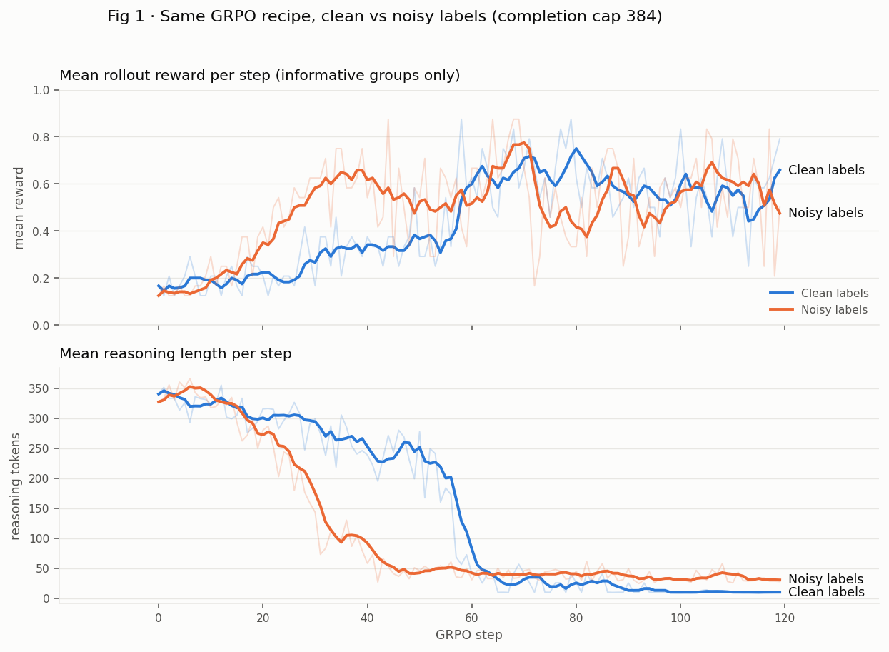

What GRPO Actually Optimizes
I ran six GRPO configurations on a production classification task. All of them chose points on one ROC curve, and the labels drew that curve.
- I asked whether a supervised label can serve as an RLVR verifier, trading cross-entropy's dense gradient for a sparse outcome reward that can select over reasoning strategies. On this task the trade lost, and the reasons why generalize.
- I fine-tuned Qwen3.5-0.8B on a production risk-classification task and ran six GRPO configurations across labels, completion caps, initializations, and curricula. I also tested CoT distillation, threshold calibration, and model routing.
- Relabeling the dataset raised balanced accuracy by 21 points, four times more than any modeling change. Duplicated items audit an annotation process for free. Mine disagreed with themselves on a fifth of repeats.
- Most of the reasoning-length collapse that outcome rewards produce came from my own reward plumbing. A completion cap combined with a strict format gate taxes long thoughts at 100%. Rollouts that finished their reasoning earned more reward when they thought longer.
- Distill-then-RL fixed GRPO's cold start and left the score unchanged. At 0.8B, on a task that direct prediction already solves, reasoning cost accuracy at every stage.
- Every trained variant chose a point on the same ROC curve as plain SFT. A logit threshold reproduces GRPO's 0.90-recall operating point within 0.002 on every metric. GRPO uniquely delivered two things, output format and operating-point control without logit access.
The hypothesis
RLVR has mostly been studied where correctness is computable, in math and code, where an execution or equivalence check supplies the reward. Any labeled dataset supports the same construction. Treat the label as the verifier, sample a group of completions per prompt, parse each final answer, and reward agreement. The question is whether that construction buys anything over supervised fine-tuning on the same labels.
As a pure training signal, it should not. Cross-entropy delivers a dense per-token gradient from every example, while GRPO compresses each example into a sparse binary reward and spends a full group of sampled rollouts on one advantage estimate. That trade is strictly worse on sample efficiency unless the reward channel changes what gets learned rather than how fast. That was the bet. An outcome reward is the only signal here that can select over latent reasoning strategies instead of imitating labels, and risk-driver linking has the surface structure of a multi-hop problem. The model must bind an event to an entity, test the rubric's exemption clauses, and decide whether the evidence meets a verified-harm bar. If those hops compose reliably only through explicit intermediate computation, RL-elicited test-time reasoning could clear a ceiling that direct prediction cannot reach. That would transport the R1 result from competition math to supervised classification.
The task's effective complexity sat below that threshold. Direct prediction saturated the learnable fraction of the labels, and reasoning cost accuracy wherever I installed it. The negative result still localized several mechanisms worth knowing, and most of them generalize past this task.
Setup
The task gives the model a passage, an entity, and a named risk driver, and asks whether the passage shows actual risk. The rubric defines actual risk as a verified negative outcome (a lawsuit, recall, breach, or shutdown) that directly affects the entity and traces to the driver, with regulator exemptions, source-of-harm rules, and a default-to-negative clause. The label is binary and a string comparison verifies it. This is the canonical RLVR setting, except an annotated label plays the role of the verifier instead of a math checker. That difference drives every result below.
The data holds 6,580 rows (6,221 unique items) split into train, validation, and holdout. All models use Qwen3.5-0.8B with LoRA (r=16). Validation served as my development set and absorbed every decision. Each final model touched the holdout exactly once.
GRPO in three equations
GRPO (Shao et al., 2024) is PPO without the learned critic. For each prompt x with reference label y, the trainer samples a group of G completions and scores each with a gated binary reward.
The gate on the closed tag matters. The model quotes the format instructions inside its own reasoning, and a lenient parser scrapes those quotes as answers.
The group itself supplies the baseline. Each sibling's advantage measures its reward against the others.
The update maximizes advantage-weighted log-likelihood over completion tokens. I take one on-policy step per batch, so PPO's ratio clipping never activates, and I drop the KL term (β=0).
The intuition is that GRPO learns only from contrast between siblings. When all G rollouts earn the same reward, every advantage equals zero and the group contributes nothing, so implementations skip uniform groups before paying for the update. This skip rule acts as a free curriculum, and it has side effects that the reward-plumbing section covers.
Results
I built the standard recipe one rung at a time. Direct SFT first. GRPO on top of it. Then teacher-written reasoning traces, rejection-sampled against the labels so the corpus keeps only traces whose freely-reached conclusion matches the reference and the student never imitates rationalization. CoT-SFT on those traces, GRPO again with room to think, and a matched-data control SFT to isolate confounds. Each model saw the test set once. The holdout has 2,022 examples, 30.6% of them positive.
| Model | Acc | Balanced | Prec | Rec | Reasoning |
|---|---|---|---|---|---|
| Direct SFT | 0.828 | 0.788 | 0.736 | 0.685 | none |
| + GRPO (cap 384) | 0.740 | 0.785 | 0.546 | 0.900 | ~10-token stubs |
| CoT-SFT (distilled) | 0.790 | 0.740 | 0.673 | 0.611 | ~150 words |
| CoT-SFT + GRPO (cap 1024) | 0.782 | 0.724 | 0.669 | 0.572 | ~160 words |
Plain SFT wins, and no RL configuration beat it. Each failure had a diagnosable mechanism, and the mechanisms carry the useful lessons.
A verifiable reward is only as true as its labels
The original labels contained duplicated passage-and-driver pairs, the same question answered twice by the annotation process. Duplicates work as a free test-retest audit, and this dataset failed it. The two answers disagreed on roughly 20% of repeats, uniformly across every split. If a label flips with probability ε on relabeling, duplicate disagreement equals d = 2ε(1−ε), so d ≈ 0.18 implies ε ≈ 0.10, and no model measured against these labels can score much above 1−ε ≈ 0.90.
I relabeled everything with a single audited pipeline. One judge applies the written rubric, a stronger adjudicator reviews low-confidence items, and audit self-agreement lands at 86–89%, above the original labels' 80–85%. The effect dwarfed every other intervention in this post. SFT trained on noisy labels scored 0.627 balanced accuracy against the clean answer key. Retrained on clean labels, it scored 0.838. Twenty-one points, with zero hyperparameters touched.
Label noise hurts RLVR more than it hurts SFT. A mislabeled example adds no zero-mean noise for sampling to average away. It delivers the same wrong training signal on every visit, and the reward lies about that example confidently and repeatably. Verifiable means checkable. It does not mean true.
The reasoning collapse came from reward plumbing
Every GRPO run showed the now-familiar pattern of reasoning length collapsing from ~350 tokens to stubs while reward climbs. The standard reading says the model learned that thinking doesn't pay. The rollout logs say otherwise.

The completion cap interacting with the format gate explains it. Over half of all rollouts hit the 384-token cap, and capped rollouts closed their </think> tag 1% of the time, against 95% below 200 tokens. An unclosed tag scores zero regardless of the reasoning's quality, which amounts to a 100% tax on long thought. Among rollouts that finished, the relationship inverts. In the pre-collapse window, mean reward rose with reasoning length, from 0.59 under 50 tokens to 0.68 at 150–250 tokens. The model never discovered that thinking is useless. It rationally optimized away a truncation penalty I had built into the reward. DAPO reaches the same conclusion at 32B scale and prescribes masking truncated rollouts out of the loss instead of zeroing them.
The skip rule carries a matching subtlety. Mastered examples produce uniform groups and vanish from the gradient, so the surviving pool drifts toward whatever the model finds contested. Late in training, that pool converges on the label-ambiguous residue where the reward deserves the least trust. Dynamic sampling concentrates compute exactly where label noise concentrates. It also reweighted my class balance without asking. Positives made up 27% of the data but 34% of the informative groups, which explains a recall drift I first blamed on the reward.
Distillation fixes the cold start, not the ceiling
With the cap raised to 1024, GRPO from the direct-SFT initialization failed to bootstrap. The policy rambled ~900 tokens without closing (6% closure), reward sat at 0.12, and each step burned ~15 minutes of sampling for almost no informative groups. This replicates, in miniature, the DeepSeek-R1 conclusion that small models don't discover reasoning through RL alone. The emergence dynamic needs a nonzero base rate of success to amplify.

CoT distillation on 3,250 rejection-sampled teacher traces cured the cold start. Closure hit 99.8%, informative groups came dense, and reasoning held steady near 200 tokens. The ceiling stayed put. CoT-SFT itself cost about 10 balanced points against direct SFT, and the matched-data control splits that price. Roughly 3.5 points came from the rejection filter thinning hard examples out of the corpus, and roughly 6 points from the reasoning objective itself, which dilutes the label signal across 300 tokens of imitation. The regressions concentrated on easy items, where a 0.8B model periodically argues itself out of answers it pattern-matches correctly. GRPO on top recovered almost nothing (0.740 to 0.724 on test). Reasoning helps small models when the task sits beyond direct prediction's reach, and even 0.5B models show gains on math. On a task direct prediction already solves, it stays overhead at every stage.
One curve
The capped GRPO run appeared to earn its keep. It reached 0.90 recall at the same balanced accuracy as SFT, a useful operating point for miss-averse domains where a false negative means a regulatory incident and a false positive means ten minutes of analyst review. Then I extracted SFT's label-token probabilities and swept its decision threshold until the recall on the holdout matched GRPO's 0.90.
| Model | Acc | Balanced | Prec | Rec |
|---|---|---|---|---|
| GRPO (5 GPU-hours) | 0.740 | 0.785 | 0.546 | 0.900 |
| SFT + threshold 0.07 (one line) | 0.742 | 0.786 | 0.548 | 0.900 |
The two match within 0.002 on every metric. The RL run had reproduced a decision threshold. The sweep even found a better point than anything I trained. Threshold 0.25 delivers 0.804 balanced accuracy, the best single-model number of the project, because 0.5 was never the right cut under class imbalance.
Routing between models hit the same wall from a third direction. The two model families do fail differently, and an oracle choosing per-example between SFT and the reasoning model scores 0.910. But the reasoning model only outperforms SFT inside SFT's lowest-confidence band, where both models sit near coin-flip, because that band is the label-ambiguous region. A confidence cascade routed ~3% of traffic and moved balanced accuracy by 0.001. The oracle gap is label ambiguity, not recoverable disagreement. No ground truth exists there to route toward.
Three independent strategies, RL, distilled reasoning, and routing, all turned out to select points on a single curve whose shape the data fixed. That convergence, more than any single run, is the result.
What GRPO delivered
Two things survived every ablation. The first is format. The gated reward taught perfect output structure, 100% closed reasoning and zero unparseable outputs, within ~50 steps from a 6–8% base rate. RLVR teaches format exceptionally well. The second is operating-point control without logit access. GRPO steered precision and recall through the reward alone, which matters for black-box or purely generative pipelines. If you own the model and can read a logit, a threshold does the same job for free. Neither of these is capability, and on this task, against a measured label-consistency ceiling near 0.90, capability was never on the table for any method.
Limitations
This is a case study with unusually thorough controls, not a survey. One task, one base model, one seed per configuration. Validation numbers carry selection pressure from a week of iteration. I measured that pressure rather than assuming it away. The two heavily-iterated arms dropped about five points from validation to test, while the barely-iterated arms held, and I report test numbers throughout. The clean labels are themselves model adjudications under a written rubric. They beat the original labels on self-consistency, but the ~11% irreducible-ambiguity residue is a property of the rubric, and it binds every number here.
Takeaways
1. Audit labels before algorithms. Duplicated items give you a free test-retest study, and 2ε(1−ε) turns their disagreement into your accuracy ceiling. 2. In RLVR, inspect what the reward plumbing taxes. Caps, gates, and parsers belong to the objective whether you meant them to or not. 3. Watch what the skip rule keeps. Dynamic sampling is a distribution shift you didn't choose. 4. Before crediting RL with an operating point, check the ROC curve of the model you started from. 5. A negative result with the confounds removed beats a positive one that won't replicate.
References
Shao, Z., et al. (2024). DeepSeekMath: Pushing the Limits of Mathematical Reasoning in Open Language Models. arXiv:2402.03300.
DeepSeek-AI (2025). DeepSeek-R1: Incentivizing Reasoning Capability in LLMs via Reinforcement Learning. arXiv:2501.12948.
Yu, Q., et al. (2025). DAPO: An Open-Source LLM Reinforcement Learning System at Scale. arXiv:2503.14476.
Liu, Z., et al. (2025). Understanding R1-Zero-Like Training: A Critical Perspective (Dr. GRPO). arXiv:2503.20783.
Shao, R., et al. (2025). Spurious Rewards: Rethinking Training Signals in RLVR. arXiv:2506.10947.
Yue, Y., et al. (2025). Does Reinforcement Learning Really Incentivize Reasoning Capacity in LLMs Beyond the Base Model? arXiv:2504.13837.
Pan, J., et al. (2025). TinyZero. GitHub repository.
Zeng, W., et al. (2025). SimpleRL-Zoo: Investigating and Taming Zero Reinforcement Learning. arXiv:2503.18892.
(2025). A Technical Study into Small Reasoning Language Models. arXiv:2506.13404.
← all research & writing